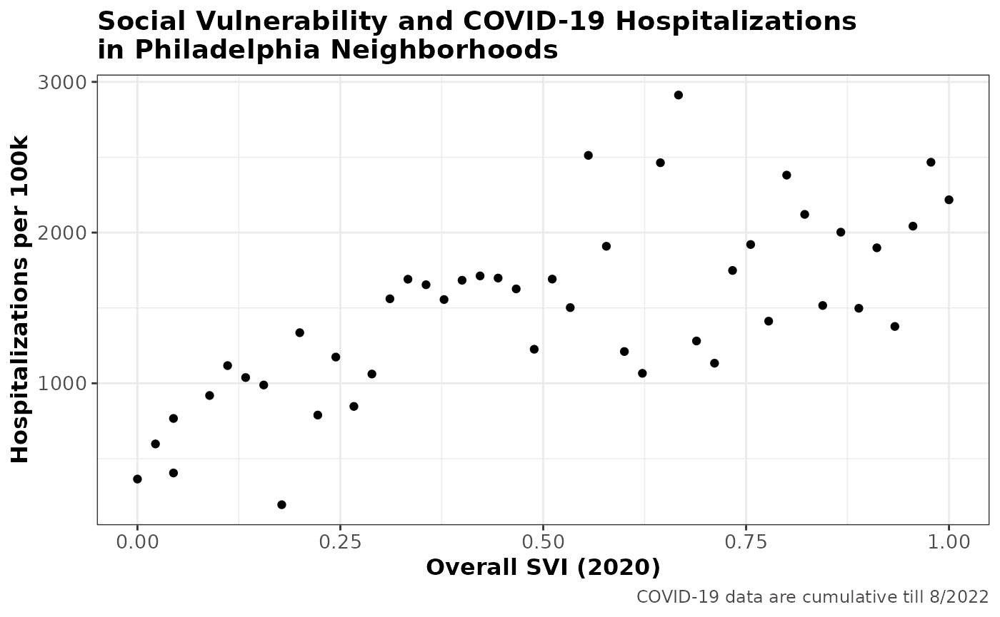

Connecting SVI and health outcome
Correlation between SVI and COVID-19 cases/deaths in Philadelphia Neighborhoods
Source:vignettes/svi-covid.Rmd
svi-covid.RmdDesigned to represent the relative resilience of communities within an area, SVI not only provides valuable information for local officials/policymakers in planning and managing public health emergencies, but also offers an important neighborhood metric to facilitate public health research, such as the correlation between health outcome and SVI (and the socioeconomic/demographic factors involved) of a certain area.
For example, to investigate the possible correlation between the COVID-19-related deaths and SVI in Philadelphia at the ZCTA level, we could use findSVI to get ZCTA-level SVI for Philadelphia (with geometry) and join the result with ZCTA-level COVID-19 data for visualization and correlation analysis.
As usual, we start with loading all the packages needed.
library(findSVI)
library(dplyr)
library(sf)
library(tidyr)
library(tmap)
library(ggplot2)
library(cowplot)ZCTA-level SVI in Philadelphia for 2020
For retrieving census data with geometry, we’ll use
get_census_data() and get_svi() to obtain SVI.
We’ll keep the GEOID(ZCTA) and SVI-related columns in the resulting SVI
table.
phl_zcta_data_geo_2020 <- get_census_data(
2020,
geography = "zcta",
state = "PA",
county = "Philadelphia",
geometry = TRUE
)
phl_zcta_svi_geo_2020 <- get_svi(2020,
data = phl_zcta_data_geo_2020) %>%
select(GEOID, contains("RPL_theme"))
phl_zcta_svi_geo_2020 %>% glimpse()#> Rows: 48
#> Columns: 7
#> $ GEOID <chr> "19102", "19103", "19104", "19106", "19107", "19109", "1911…
#> $ RPL_theme1 <dbl> 0.0444, 0.0222, 0.6889, 0.0000, 0.3333, NA, 0.5778, NA, 0.1…
#> $ RPL_theme2 <dbl> 0.0222, 0.2222, 0.2000, 0.1111, 0.0667, NA, 0.8667, NA, 0.4…
#> $ RPL_theme3 <dbl> 0.0889, 0.1778, 0.5556, 0.0444, 0.4000, NA, 0.5111, NA, 0.1…
#> $ RPL_theme4 <dbl> 0.9556, 0.9333, 0.9778, 0.7111, 1.0000, NA, 0.5778, NA, 0.1…
#> $ RPL_themes <dbl> 0.1778, 0.2667, 0.6889, 0.0444, 0.3778, NA, 0.7111, NA, 0.2…
#> $ geometry <MULTIPOLYGON [°]> MULTIPOLYGON (((-75.16854 3..., MULTIPOLYGON (…ZCTA-level COVID-19 data in Philadelphia
Disease-related data at the ZCTA level is usually not easily accessible for privacy reasons. Here, we’ll use data from the COVID-19 Health Inequities in Cities Dashboard, a great resource released by Drexel University’s Urban Health Collaborative and the Big Cities Health Coalition (BCHC). In addition to data available for download, the dashboard provides informative visualizations of COVID-19 related outcomes and inequities over time and across BCHC cities.
After downloading the raw data, we can select Philadelphia city and the variables of interest (cases per 100k and deaths per 100k).
#source:https://github.com/Drexel-UHC/covid_inequities_project
#bchc_raw <- read_csv("../../byZCTA_bchc.csv")
phl_covid <- bchc_raw %>%
filter(city == "Philadelphia") %>%
mutate(GEOID = paste(zcta), .after = zcta) %>%
select(GEOID, cases_per_100k, deaths_per_100k)
glimpse(phl_covid)#> Rows: 46
#> Columns: 3
#> $ GEOID <chr> "19102", "19103", "19104", "19106", "19107", "19111", …
#> $ cases_per_100k <dbl> 26326.01, 21012.64, 27916.35, 21156.29, 24996.56, 2205…
#> $ deaths_per_100k <dbl> NA, 223.011, 317.401, 47.649, 165.221, 296.566, 413.66…Joining data for visualzation
Once we have the ZCTA-level SVI and COVID-19 data ready, we can join them together by GEOID(ZCTA), keeping the spatial information.
phl_svi_covid <- phl_covid %>%
left_join(phl_zcta_svi_geo_2020, by = "GEOID") %>%
#although geometry sticky, after wrangling, class() become df
st_as_sf(sf_column_name = "geometry")
phl_svi_covid %>% head(10)
#> Simple feature collection with 10 features and 8 fields
#> Geometry type: MULTIPOLYGON
#> Dimension: XY
#> Bounding box: xmin: -75.24074 ymin: 39.92578 xmax: -74.97371 ymax: 40.13799
#> Geodetic CRS: NAD83
#> # A tibble: 10 × 9
#> GEOID cases_per_100k deaths_per_100k RPL_theme1 RPL_theme2 RPL_theme3
#> <chr> <dbl> <dbl> <dbl> <dbl> <dbl>
#> 1 19102 26326. NA 0.0444 0.0222 0.0889
#> 2 19103 21013. 223. 0.0222 0.222 0.178
#> 3 19104 27916. 317. 0.689 0.2 0.556
#> 4 19106 21156. 47.6 0 0.111 0.0444
#> 5 19107 24997. 165. 0.333 0.0667 0.4
#> 6 19111 22053. 297. 0.578 0.867 0.511
#> 7 19114 23377. 414. 0.178 0.422 0.156
#> 8 19115 25553. 778. 0.378 0.822 0.289
#> 9 19116 25579. 553. 0.4 0.733 0.244
#> 10 19118 14958. 358. 0.156 0.289 0.2
#> # ℹ 3 more variables: RPL_theme4 <dbl>, RPL_themes <dbl>,
#> # geometry <MULTIPOLYGON [°]>Maps
To visualize their spatial pattern directly, we can plot the SVI and COVID-19 data in Philadelphia neighborhoods (ZCTAs) directly on maps:
covid_deaths <- phl_svi_covid %>%
select(GEOID, geometry, deaths_per_100k) %>%
drop_na() %>%
tm_shape(projection = sf::st_crs(26915))+
tm_polygons("deaths_per_100k",
style = "quantile",
title = "Deaths/100k (by 8/2022)")+
tm_layout(title = "COVID-19 Deaths",
title.size = 1,
title.position = c("left", "TOP"),
legend.position = c("RIGHT", "bottom"),
legend.title.size = 0.9,
legend.width = 1.5)
covid_cases <- phl_svi_covid %>%
select(GEOID, geometry, cases_per_100k) %>%
drop_na() %>%
tm_shape(projection = sf::st_crs(26915))+
tm_polygons("cases_per_100k",
style = "quantile",
title = "Cases/100k (by 8/2022)")+
tm_layout(title = "COVID-19 Cases",
title.size = 1,
title.position = c("left", "TOP"),
legend.position = c("RIGHT", "bottom"),
legend.title.size = 0.9,
legend.width = 2)
svi <- phl_svi_covid %>%
select(GEOID, geometry, RPL_themes) %>%
drop_na() %>%
tm_shape(projection = sf::st_crs(26915))+
tm_polygons("RPL_themes",
style = "quantile",
title = "Overall SVI (2020)",
palette = "Blues")+
tm_layout(title = "SVI",
title.size = 1,
title.position = c("left", "TOP"),
legend.position = c("RIGHT", "bottom"),
legend.title.size = 0.9,
legend.width = 2)
plots <- list(svi, covid_cases, covid_deaths)
current.mode <- tmap_mode("plot")
#> tmap mode set to plotting
#> tmap mode set to plotting
tmap_arrange(
plots,
nrow = 1,
width = c(0.33, 0.33, 0.34)
) SVI and COVID-19 outcome in Philadelphia Neighborhoods (ZCTAs)
Correlation
To look at possible correlation between SVI and COVID-19 cases/deaths, we’ll scatter plot to visualize their relationships:
deaths_svi <- phl_svi_covid %>%
ggplot(aes(x = RPL_themes, y = deaths_per_100k)) +
geom_point()+
labs(
caption = "COVID-19 data shown are cumulative till 8/2022",
x = "Overall SVI (2020)",
y = "Deaths per 100k")+
theme_bw()+
theme(
text = element_text(size = 13),
plot.caption = element_text(size = 10, color = "#4D4948"),
axis.title = element_text(size = 12, face = "bold"),
legend.title = element_text(size = 13)
)
cases_svi <- phl_svi_covid %>%
ggplot(aes(x = RPL_themes, y = log(cases_per_100k))) +
geom_point()+
labs(
caption = " ", # to keep same dimension
x = "Overall SVI (2020)",
y = "log Cases per 100k ") +
theme_bw()+
theme(
text = element_text(size = 13),
axis.title = element_text(size = 12, face = "bold"),
legend.title = element_text(size = 13)
)
plot_row <- plot_grid(cases_svi, deaths_svi)
title <- ggdraw() +
draw_label(
"SVI and COVID-19 Cases/Deaths in Philadelphia Neighborhoods",
fontface = "bold",
x = 0.1,
hjust = 0
)+
theme(
plot.margin = margin(0, 0, 0, 0)
)
plot_grid(
title, plot_row,
ncol = 1,
#adjust vertical title margins
rel_heights = c(0.1, 1))
This is similar to the story shown on the COVID-19 Health Inequities in Cities Dashboard, where they found most socially vulnerable neighborhoods have 52% and 7.3% higher deaths and cases per 100k, respectively, compared to the least socially vulnerable neighborhoods. It may be interesting to look back on the correlation between SVI and COVID-19 outcome at an earlier time point to see how the communities are impacted (perhaps more directly) by the pandemic.
Reference
Diez Roux, A., Kolker, J., Barber, S., Bilal, U., Mullachery, P., Schnake-Mahl, A., McCulley, E., Vaidya, V., Ran, L., Rollins, H., Furukawa, A., Koh, C., Sharaf, A., Dureja, K. (2021). COVID-19 Health Inequities In Cities Dashboard. Drexel University: Urban Health Collaborative. http://www.covid-inequities.info/.